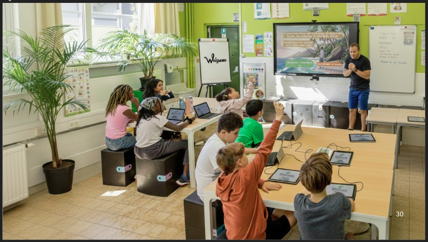
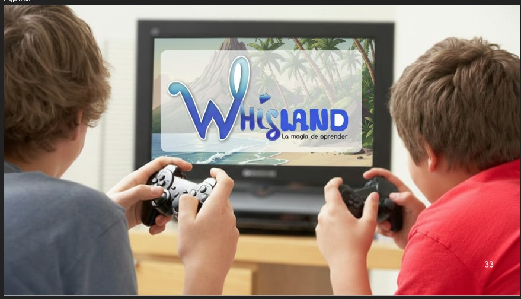
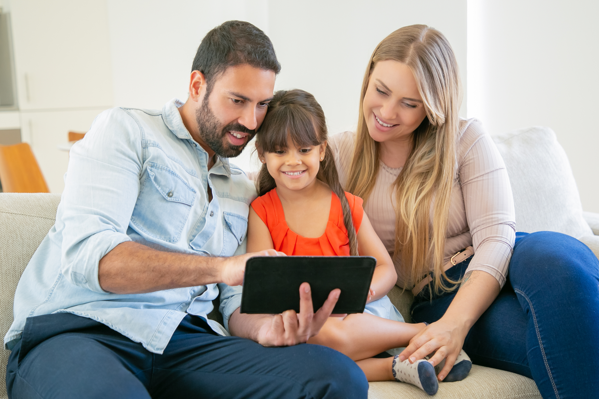
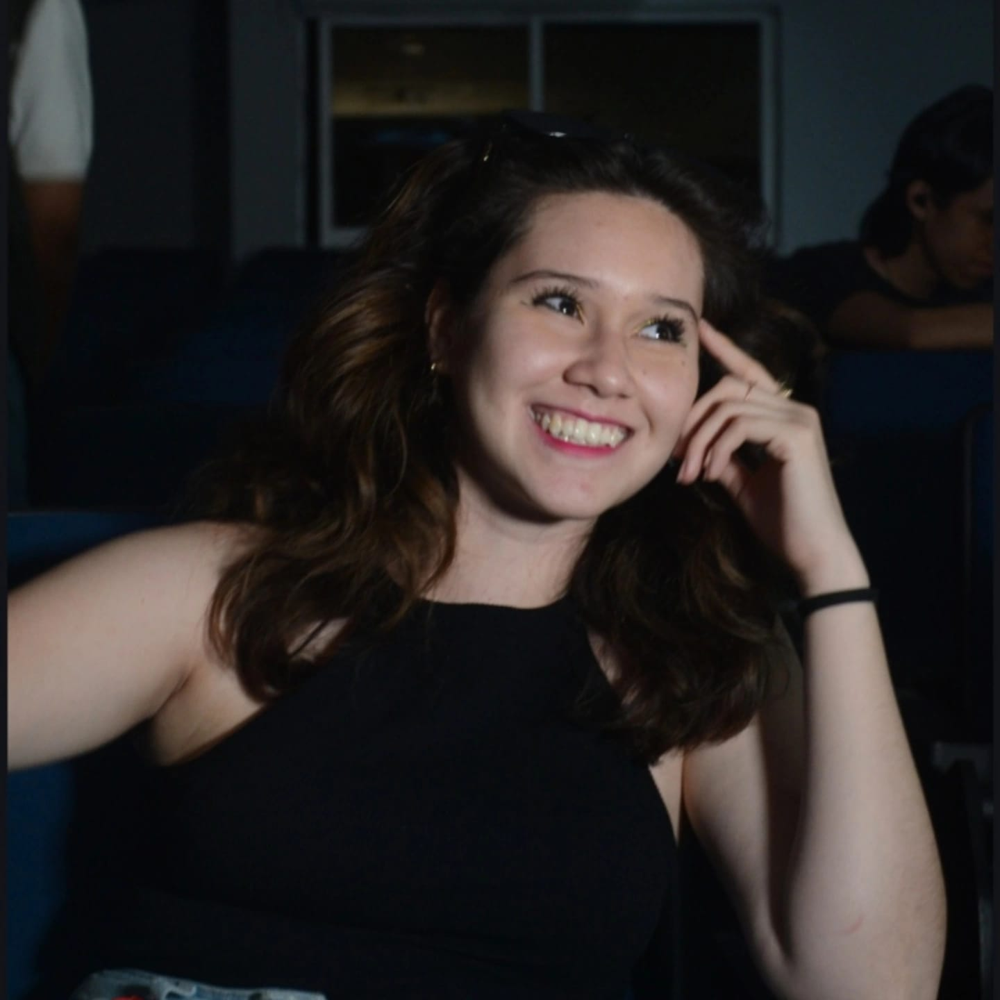
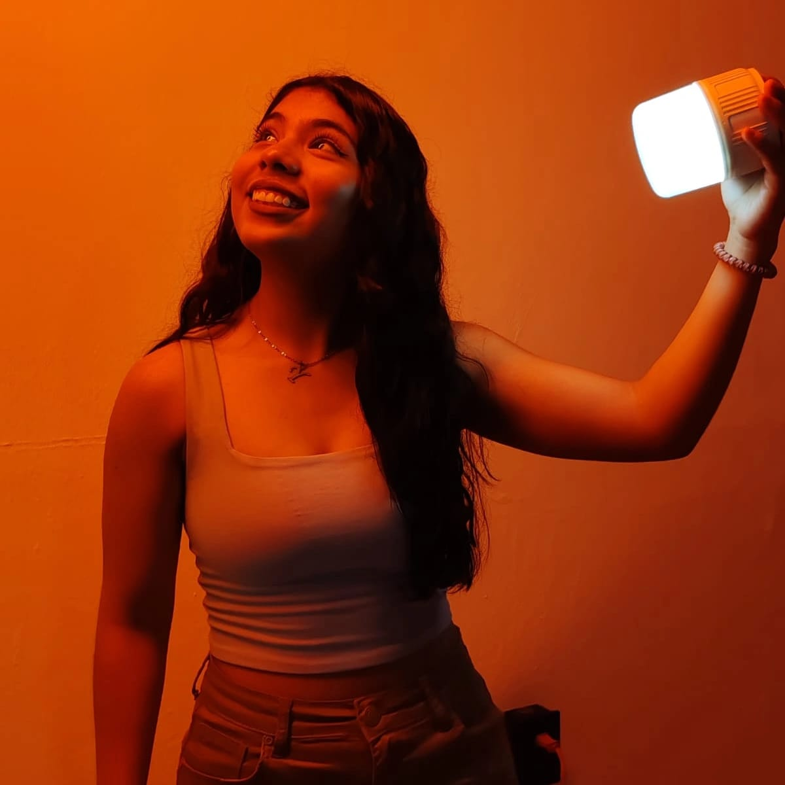
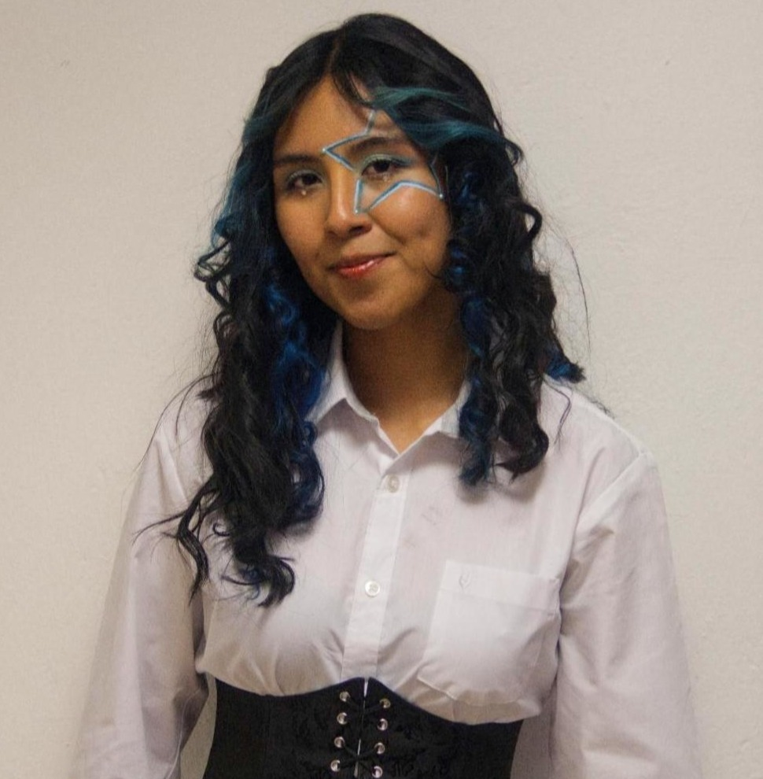

Whisland
La magia de aprender juntos
Jugar¿Qué es Whisland?
Whisland es un universo narrativo mágico creado para inspirar, acompañar y conectar con niños y niñas a través de historias llenas de aventura, fantasía y aprendizaje. En esta isla extraordinaria, cada personaje, paisaje y desafío invita a descubrir el valor de las emociones, la empatía, la creatividad y la toma de decisiones.
Más que un mundo fantástico, Whisland busca convertirse en una experiencia significativa para las familias; un espacio donde la imaginación y los valores conviven para crear conversaciones, reflexiones y momentos especiales entre padres e hijos.

Cada decisión cuenta...
"Whisland nace del deseo de crear contenido que no solo entretenga, sino que también deje huella en quienes lo visitan."

.jpeg)
.jpeg)
Misión
Brindamos una experiencia interactiva-educativa a niñas y niños de 9 a 12 años de edad, mediante una serie digital animada, que fomenta el aprendizaje y la toma de decisiones a través de historias.
Visión
Whisland busca convertirse en una plataforma interactiva reconocida por impulsar el aprendizaje emocional y social en las infancias actuales, implementando narrativa, tecnología, y diseño interactivo para generar experiencias digitales innovadoras y accesibles.
Valores
Whisland tiene como valores principales, la empatía, el respeto y la honestidad.


¿Cómo nace Wisland?
"Creemos que las historias pueden convertirse en puentes, y que la imaginación tiene el poder de sembrar valores que acompañan toda la vida."

¿Quiénes están detrás de Whisland?

Itary Arais Gascón Martinez, encargada del diseño de la narrativa, cofundadora del proyecto.

Yuliana Navarro Delgadillo, encargada del estilo visual de la plataforma y el universo narrativo.

Miranda Izel Escobedo Balderas, encargada del diseño y escritura del universo narrativo.